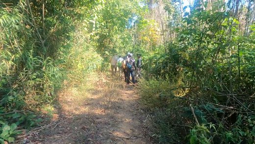

00:00:42.000
Pequeno grupo segue por uma trilha de terra cercada por capim alto e árvores.
Acesso à Caverna do Divino, Rurópolis (PA) · confirmado
A trilha aparece após a introdução do passeio. Logo adiante, o guia explica a descida até a caverna.
Transcrição · 00:00:31 | 00:00:37 | 00:01:07 | 00:01:15
Turismo Aqui — quadro de vídeo publicado no YouTube